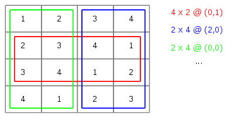

Úkolem je napsat program, který dokáže rozdělit matici na dvě
co nejpodobnější části.
Vstupem programu je matice obsahující celá kladná čísla. Velikost
matice je omezena pouze velikostí dostupné paměti. Program tuto
matici načte a najde v ní podmatici (obdélníkový výřez) tak, aby
součet prvků v tomto výřezu a součet prvků mimo výřez byl stejný
(případně aby tyto součty byly co nejbližší). Takových podmatic
může být samozřejmě více stejně vhodných. Výstupem program je
výpis nalezených podmatic. Na obrázku je uveden příklad nalezených
podmatic:

Vstupem program je zadání matice celých kladných čísel. Matice
je zadaná po řádcích, každá řádka matice je jednou řádkou vstupu.
Čísla na řádce jsou oddělena čárkami, za posledním číslem na řádce
je odřádkování (\n). Zadání matice končí za poslední řádkou vstupu
(aktivní konec souboru - EOF).
Výstupem program je seznam nalezených podmatic. Každá nalezená
podmatice je vypsaná na zvláštním řádku, řádek má tvar:
W x H @ (X, Y): IN : OUT
- W
- je šířka (počet sloupců) nalezené podmatice,
- H
- je výška (počet řádek) nalezené podmatice,
- X
- je x-souřadnice (sloupec) levého horního rohu
nalezené podmatice v původní matici. Souřadnice počítáme počínaje 0,
- Y
- je y-souřadnice (řádka) levého horního rohu
nalezené podmatice v původní matici. Souřadnice počítáme počínaje 0,
- IN
- je součet prvků uvnitř nalezené podmatice,
- OUT
- je součet prvků vně nalezené podmatice.
Program musí ošetřovat správnost vstupních dat. Pokud jsou na vstupu
nesprávná data, program to detekuje, vypíše chybové hlášení a ukončí se.
Za chybu je považováno:
- nečíselná, záporná nebo nulová hodnota prvku matice,
- chybějící nebo přebývající oddělovače čísel na řádce,
- oddělovače jiné než čárka,
- jiný než obdélníkový tvar matice,
- matice s méně než dvěma prvky (matici velikosti 1x1 nelze
rozdělit, proto musí být vstup alespoň v jednom směru větší než 1).
Váš program bude spouštěn v omezeném testovacím prostředí. Je omezen
dobou běhu (limit je vidět v logu referenčního řešení) a dále je omezena i
velikost dostupné paměti. Testovací prostředí dále zakazuje používat některé
"nebezpečné funkce" -- funkce pro spouštění programu, pro práci se sítí, ...
Pokud jsou tyto funkce použité, program se nespustí.
V závislosti na zvoleném algoritmu může být úloha výpočetně náročnější.
Pro tuto úlohu existuje celá řada algoritmů od jednoduchých po pokročilé, které
mohou pro větší vstupní data pracovat až o několik řádů rychleji. Naivní řešení
vypočte výsledek v čase O(n6), kde n je velikost
matice (šířka / výška, předpokládáme-li čtvercovou matici). Rozumná implementace
naivního algoritmu projde všemi závaznými testy. Neprojde však nepovinnými a
bonusovými testy, tedy bude hodnocena méně než 100% bodů. Při volbě pokročilejšího
algoritmu lze dosáhnout lepších výsledků a časově zvládnout nepovinné testy
(zisk 100% bodů) či dokonce bonusové testy (zisk nad 100% bodů). Nepovinné a
bonusové testy postupně zvětšují velikosti testovaných matic.
Ukázka práce programu:
Zadejte matici:
1, 5, 6, 8
2, 7, 2, 5
3, 6, 2, 5
1, 9, 8, 12
8, 4, 2, 5
Vysledku: 1
2 x 5 @ (1, 0): 51 : 50
Zadejte matici:
1, 2, 2, 1, 1
1, 2, 2, 2, 1
1, 2, 2, 2, 1
1, 2, 2, 2, 1
Vysledku: 8
3 x 3 @ (0, 0): 15 : 16
3 x 3 @ (0, 1): 15 : 16
5 x 2 @ (0, 0): 15 : 16
5 x 2 @ (0, 1): 16 : 15
5 x 2 @ (0, 2): 16 : 15
2 x 4 @ (1, 0): 16 : 15
2 x 4 @ (2, 0): 15 : 16
3 x 3 @ (2, 1): 15 : 16
Zadejte matici:
1, 2, 3, 4
2, 3, 4, 1
3, 4, 1, 2
4, 1, 2, 3
Vysledku: 6
2 x 4 @ (0, 0): 20 : 20
4 x 2 @ (0, 0): 20 : 20
4 x 2 @ (0, 1): 20 : 20
4 x 2 @ (0, 2): 20 : 20
2 x 4 @ (1, 0): 20 : 20
2 x 4 @ (2, 0): 20 : 20
Zadejte matici:
1, 3, 5, 7, 9, 11, 13, 15, 17
Vysledku: 1
4 x 1 @ (3, 0): 40 : 41
Zadejte matici:
1204
207
1336
417
511
Vysledku: 1
1 x 2 @ (0, 2): 1753 : 1922
Zadejte matici:
1, 1
2, 3, 4
Nespravny vstup.
Zadejte matici:
1, 1, 0
2, 3, 4
Nespravny vstup.
Zadejte matici:
1, 1, 3
2, 3, abcd
Nespravny vstup.
Poznámky:
- Nenačítejte vstupní řádky jako řetězce. Pro načtení vstupu lze vystačit s funkcí
scanf, použití řetězců načítání spíše ztíží.
- Pro reprezentaci matice si budete muset alokovat prostor dynamicky.
- Velikost matice není známá dopředu. Paměť pro prvky budete muset alokovat
postupně a budete muset alokovanou paměť postupně zvětšovat. Hodí se k tomu funkce
realloc.
- Při alokaci nemíchejte C funkce (malloc, realloc, free) a
C++ operátory pro alokaci (new, delete). Míchání C a C++ stylu
není rozumné, při testování takový program nejspíše spadne.
- Nepoužívejte C++ knihovnu STL (vector, list, ...). Účelem je procvičit
dynamickou alokaci paměti v C. STL budete používat v předmětu PA2, v PA1 je použití STL
zakázané. Pokud přesto STL použijete, Váš program nepůjde přeložit.
- V jednom z testů se kontrolují přístupy do paměti a kontroluje se uvolňování dynamicky
alokované paměti. Pokud dynamicky alokovanou paměť neuvolníte, bude Váš výsledek zatížen
bodovým malusem.
- Pořadí nalezených podmatic na výstupu není podstatné. Při porovnání výsledků si testovací
prostředí v případě potřeby řádky prohází. Tedy například pro druhý ukázkový běh může
být pořadí následující:
...
3 x 3 @ (0, 0): 15 : 16
3 x 3 @ (0, 1): 15 : 16
5 x 2 @ (0, 0): 15 : 16
5 x 2 @ (0, 1): 16 : 15
5 x 2 @ (0, 2): 16 : 15
2 x 4 @ (1, 0): 16 : 15
2 x 4 @ (2, 0): 15 : 16
3 x 3 @ (2, 1): 15 : 16
...
2 x 4 @ (1, 0): 16 : 15
2 x 4 @ (2, 0): 15 : 16
3 x 3 @ (2, 1): 15 : 16
3 x 3 @ (0, 0): 15 : 16
3 x 3 @ (0, 1): 15 : 16
5 x 2 @ (0, 0): 15 : 16
5 x 2 @ (0, 1): 16 : 15
5 x 2 @ (0, 2): 16 : 15
...
2 x 4 @ (1, 0): 16 : 15
2 x 4 @ (2, 0): 15 : 16
3 x 3 @ (2, 1): 15 : 16
5 x 2 @ (0, 0): 15 : 16
5 x 2 @ (0, 1): 16 : 15
5 x 2 @ (0, 2): 16 : 15
3 x 3 @ (0, 0): 15 : 16
3 x 3 @ (0, 1): 15 : 16
nebo libovolná jiná ze zbývajících 40317 permutací.
|